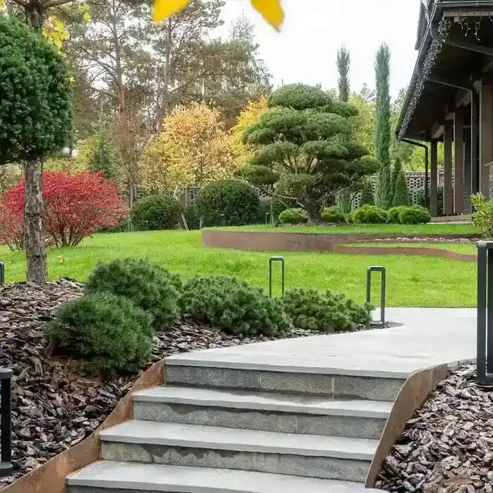
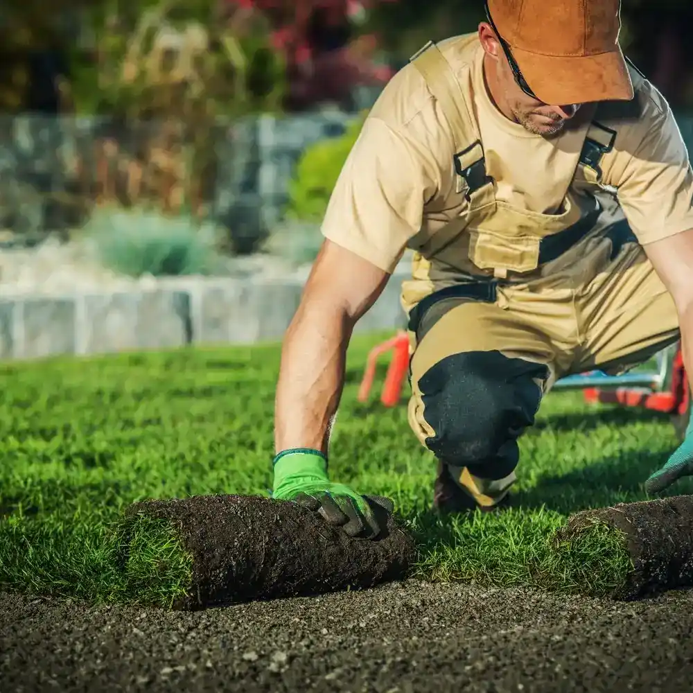
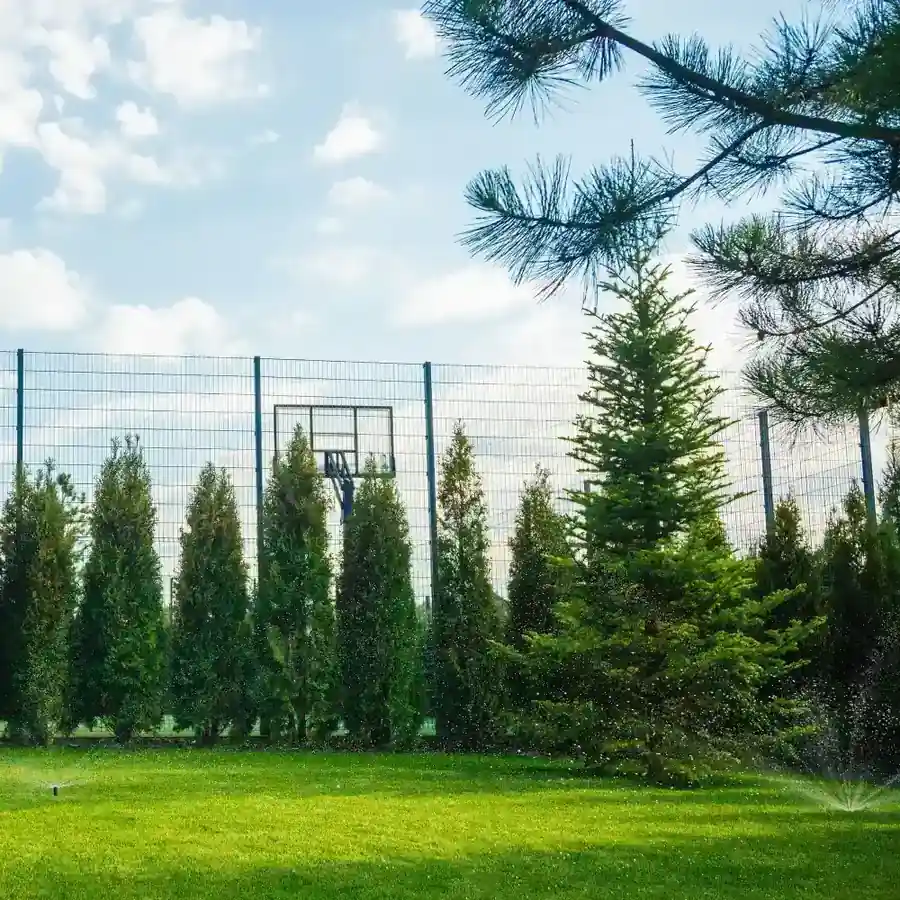
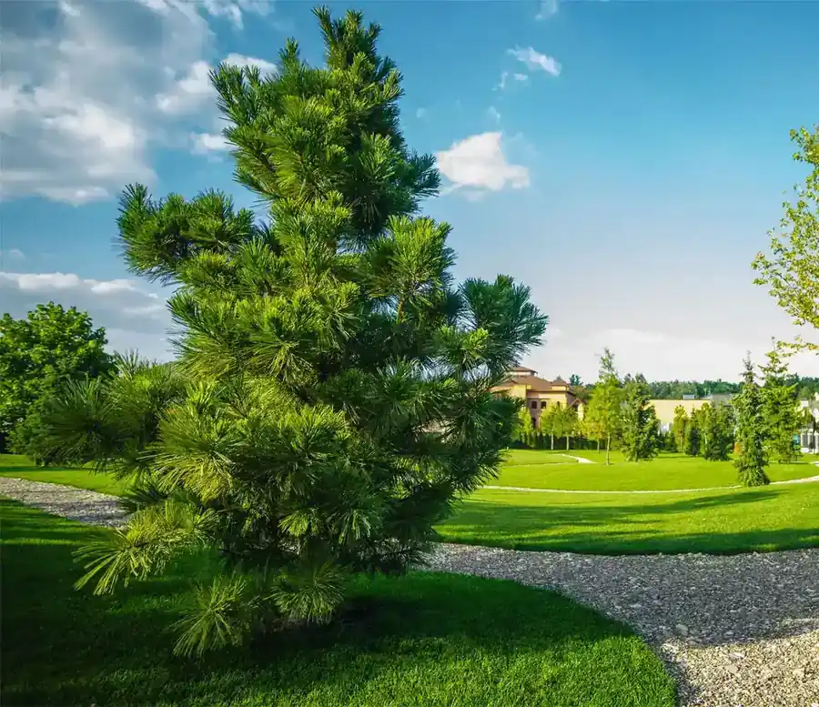

[01] Від неба до саду
Зверху — план.
Зблизька — сад


01 · Газон
Рулонний газон
Власні поля, укладання за день, ходити можна за кілька днів.

02 · Полив
Автоматичний полив
Проєкт і монтаж систем поливу на обладнанні зі США. Обслуговування.

03 · Озеленення
Озеленення
Крупноміри, кущі, квітники, мульчування. Рослини з власних розсадників.